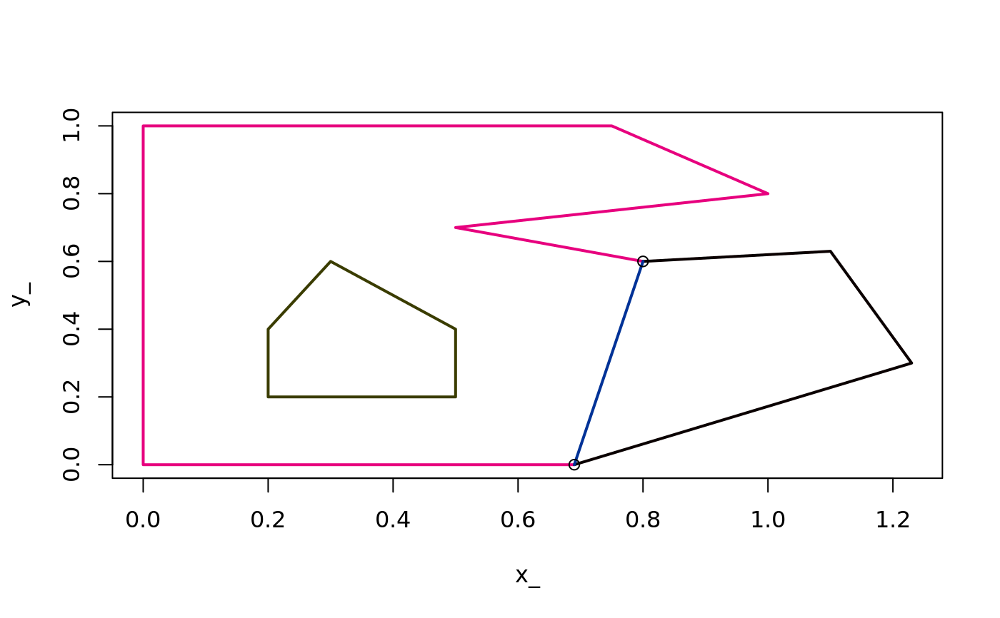
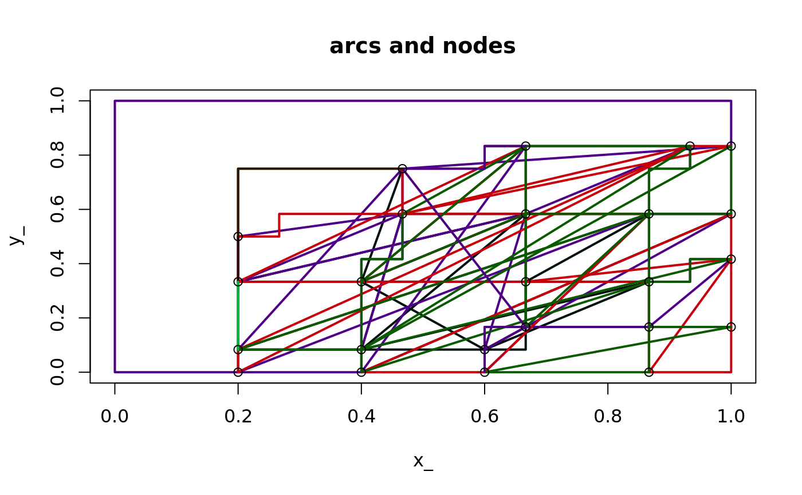

sc_arc.RdReturn a label and vertex count of each arc.
sc_arc(x, ...) # S3 method for default sc_arc(x, ...) # S3 method for ARC sc_arc(x, ...)
| x | input object |
|---|---|
| ... | arguments for methods |
Arcs are unbranched paths within the line segment graph. Nodes are the vertices where three or more arcs meet.
As with the PATH and SC models the arc id values will only be relevant when
those entities are identified and labelled. Running sc_arc on a simple features model (for example) will
identify them and return a summary, but without having any record of what they refer to. Use ARC(x) first to
work with models that don't included labels.
sc_arc(minimal_mesh)#> # A tibble: 4 x 2 #> arc_ ncoords_ #> <chr> <int> #> 1 45c3928704 7 #> 2 79b951b0f9 2 #> 3 b7c812ae4e 4 #> 4 fedb89601f 6#> NULLtitle("arcs and nodes")